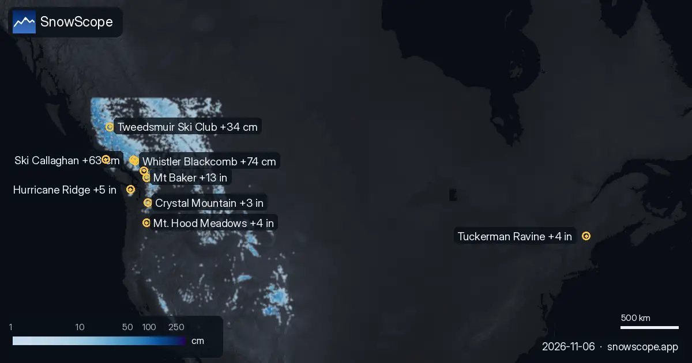

Dónde nevará más en las próximas 72 horas: Whistler Blackcomb +74 cm (6 de noviembre)
Nuestra tabla diaria de las estaciones con más nieve nueva prevista en las próximas 24 horas y hasta el 9 de noviembre, en Europa, Marruecos y Norteamérica, con la cota de nieve.
Consulta la previsión de nieve en tiempo real de Whistler Blackcomb en la app SnowScopeEspesor de nieve, alertas de nieve polvo y mapa 3D, gratis.
Europa y Marruecos
Orcières Merlette (Francia): 0 cm en las próximas 24 horas y 19 cm en 72 horas, cota de nieve hacia 2000 m. Grindelwald (Suiza): 4 cm en las próximas 24 horas y 18 cm en 72 horas, cota de nieve hacia 2000 m. La Grave (Francia): 0 cm en las próximas 24 horas y 15 cm en 72 horas, cota de nieve hacia 2900 m.
| # | Estación | Región | +24 h | +72 h | Cota de nieve |
|---|---|---|---|---|---|
| 1 | Orcières Merlette | Alpes · Francia | 0 cm | 19 cm | 2000 m |
| 2 | Grindelwald | Alpes · Suiza | 4 cm | 18 cm | 2000 m |
| 3 | La Grave | Alpes · Francia | 0 cm | 15 cm | 2900 m |
| 4 | Les Deux Alpes | Alpes · Francia | 0 cm | 15 cm | 2300 m |
| 5 | Puy-Saint-Vincent | Alpes · Francia | 0 cm | 15 cm | 2200 m |
| 6 | Chaillol | Alpes · Francia | 0 cm | 14 cm | 2200 m |
| 7 | Axalp | Alpes · Suiza | 3 cm | 13 cm | 2000 m |
| 8 | Alpe d'Huez Grand Domaine | Alpes · Francia | 0 cm | 13 cm | 2200 m |
| # | Estación | Región | +24 h | +72 h | Cota de nieve |
|---|---|---|---|---|---|
| 1 | Mt Baker | Oeste de EE. UU. · Estados Unidos | 2 in (6 cm) | 13 in (33 cm) | 8200 ft (2500 m) |
| 2 | Hurricane Ridge | Oeste de EE. UU. · Estados Unidos | 0 in (0 cm) | 5 in (12 cm) | 8200 ft (2500 m) |
| 3 | Mt. Hood Meadows | Oeste de EE. UU. · Estados Unidos | 1 in (3 cm) | 4 in (10 cm) | 11.500 ft (3500 m) |
| 4 | Tuckerman Ravine | Noreste de EE. UU. · Estados Unidos | 0 in (0 cm) | 4 in (9 cm) | – |
| 5 | Crystal Mountain | Oeste de EE. UU. · Estados Unidos | 0 in (1 cm) | 3 in (7 cm) | 10.200 ft (3100 m) |
| 6 | Ski Eldorado | Noreste de EE. UU. · Canadá | 0 in (0 cm) | 3 in (7 cm) | 8500 ft (2600 m) |
| 7 | Saddleback Mountain | Noreste de EE. UU. · Estados Unidos | 0 in (0 cm) | 2 in (6 cm) | 8900 ft (2700 m) |
| 8 | Sahalie Ski Club | Oeste de EE. UU. · Estados Unidos | 0 in (0 cm) | 2 in (6 cm) | 8900 ft (2700 m) |
| # | Estación | Región | +24 h | +72 h | Cota de nieve |
|---|---|---|---|---|---|
| 1 | Whistler Blackcomb | Oeste de Canadá · Canadá | 14 cm | 74 cm | 2200 m |
| 2 | Ski Callaghan | Oeste de Canadá · Canadá | 12 cm | 63 cm | 1800 m |
| 3 | Mount Cain Alpine Park | Oeste de Canadá · Canadá | 2 cm | 50 cm | 1800 m |
| 4 | Tweedsmuir Ski Club | Oeste de Canadá · Canadá | 13 cm | 34 cm | 1300 m |
| 5 | Sasquatch | Oeste de Canadá · Canadá | 0 cm | 20 cm | 2300 m |
| 6 | Mount Washington Alpine Resort | Oeste de Canadá · Canadá | 0 cm | 19 cm | 2300 m |
| 7 | Manning Park Resort | Oeste de Canadá · Canadá | 1 cm | 15 cm | 2600 m |
| 8 | Kicking Horse Resort | Oeste de Canadá · Canadá | 4 cm | 14 cm | 2000 m |

Estados Unidos
Mt Baker (Estados Unidos): 2 in (6 cm) en las próximas 24 horas y 13 in (33 cm) en 72 horas, cota de nieve hacia 8200 ft (2500 m). Hurricane Ridge (Estados Unidos): 0 in (0 cm) en las próximas 24 horas y 5 in (12 cm) en 72 horas, cota de nieve hacia 8200 ft (2500 m). Mt. Hood Meadows (Estados Unidos): 1 in (3 cm) en las próximas 24 horas y 4 in (10 cm) en 72 horas, cota de nieve hacia 11.500 ft (3500 m).
Canadá
Whistler Blackcomb (Canadá): 14 cm en las próximas 24 horas y 74 cm en 72 horas, cota de nieve hacia 2200 m. Ski Callaghan (Canadá): 12 cm en las próximas 24 horas y 63 cm en 72 horas, cota de nieve hacia 1800 m. Mount Cain Alpine Park (Canadá): 2 cm en las próximas 24 horas y 50 cm en 72 horas, cota de nieve hacia 1800 m.
Lo que viene
La cota de nieve está unos 300 m por debajo de la cota de congelación prevista: por encima, la nieve nueva debería seguir polvo; por debajo, espera nieve húmeda o lluvia.
Las cifras de las estaciones de esquí son estimaciones del modelo para las pistas altas; las estaciones de medida miden en un punto, en la fecha indicada.
Las previsiones a varios días pueden cambiar: vuelve a mirar el mapa el día antes de viajar.
Consejos para esquiadores
- La nieve nueva es mejor en las primeras horas: sal temprano, antes del sol y de la gente.
- Donde la cota de congelación suba por encima de la estación, cuenta con nieve húmeda y usa los remontes más altos.
- Antes de salir fuera de pista o de travesía, lee el boletín oficial de aludes (enlaces abajo).
- Nieve en el mapa no significa que la estación esté abierta: consulta remontes y fechas de apertura en su web.
- Activa una alerta de nieve polvo en la app SnowScope para saber cuándo Whistler Blackcomb recibe nieve nueva.
Sobre estas cifras
Los espesores de nieve de las estaciones son la nieve más profunda en las pistas altas según el modelo de nieve de SnowScope (unos 1 km, cálculo del 5 de noviembre); son estimaciones para una zona, no una medida en un punto. Los valores de las estaciones de medida son medidas en la fecha indicada. Las previsiones pueden cambiar. Consulta siempre el boletín oficial de aludes antes de salir fuera de pista.
Boletines oficiales de aludes: EAWS (Europe) · avalanche.org (US) · Avalanche Canada
Citar este informe
Para investigación, docencia o prensa: cifras y gráficos reutilizables libremente bajo CC BY 4.0 con esta cita.
SnowScope (2026), Dónde nevará más en las próximas 72 horas: Whistler Blackcomb +74 cm (6 de noviembre), https://snowscope.app/blog/es/2026/11/where-most-snow-falls-next-72-hours-6-november-2026.html, consultado el 2026-11-06
SnowScope (Atlas Labs). (2026, November 6). Dónde nevará más en las próximas 72 horas: Whistler Blackcomb +74 cm (6 de noviembre). SnowScope snow reports. https://snowscope.app/blog/es/2026/11/where-most-snow-falls-next-72-hours-6-november-2026.html
BibTeX
@misc{snowscope2026wheremostsnowfallsnext72,
author = {{SnowScope (Atlas Labs)}},
title = {Dónde nevará más en las próximas 72 horas: Whistler Blackcomb +74 cm (6 de noviembre)},
year = {2026},
month = nov,
howpublished = {\url{https://snowscope.app/blog/es/2026/11/where-most-snow-falls-next-72-hours-6-november-2026.html}},
note = {Published 2026-11-06 09:39 UTC; accessed 2026-11-06}
}· CC BY 4.0 · Métodos, datos y herramientas →
Whistler Blackcomb: nieve y temperatura según la altura, este invierno vs el pasado (herramientas) →
Más partes de nieve

¿Qué estaciones tienen casi siempre nieve? Analizamos 46 inviernos pasados (1980-81–2025-26) para cada estación de nuestro mapa y contamos los días …

Mount Washington Alpine Resort (Canadá) tiene hoy la nieve más profunda en el oeste de Canadá, con unos 145 cm en las pistas altas. Le siguen …

La superficie nevada pasó de 0 sq mi (0 km²) el 6 de noviembre a 788 sq mi (2040 km²) hoy, y nuestra previsión da 104 sq mi (270 km²) el 11 de …